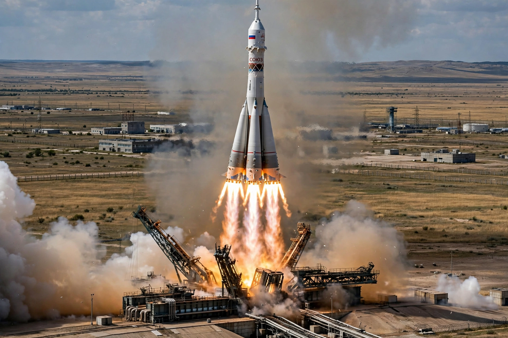

Soyuz (rocket family)
From Wikipedia, the free encyclopedia
| Soyuz (rocket family) | |
|---|---|
| Country | USSR / Russia |
| Designer | OKB-1 (Sergei Korolev) |
| First flight | 1966 (family roots 1957) |
| Status | In service |

A Soyuz lifts off from Baikonur.The Soyuz family of expendable launch systems is a series of Soviet and Russian rockets derived from Sergei Korolev's R-7 Semyorka — the world's first ICBM, which launched Sputnik 1 and Yuri Gagarin. With well over a thousand launches across the R-7 family since 1957, it is the most-flown rocket lineage in history, and its modern Soyuz-2 form remains Russia's principal crew launcher.
The design is unmistakable: four tapered liquid-fuel strap-on boosters form the first stage around a central core, all ignited on the ground. The boosters separate in a spinning cross pattern nicknamed the "Korolev cross", one of rocketry's iconic sights.
Variants and operations
Soyuz rockets carried every Soviet and Russian crewed mission from 1967 onward and, between the Space Shuttle's retirement in 2011 and Crew Dragon's debut in 2020, were the only way to reach the International Space Station. They launch from Baikonur, Plesetsk and Vostochny Cosmodrome, and for a decade also flew commercially from Kourou in French Guiana with Arianespace — a collaboration ended by the rupture in relations after 2022.
The modernised Soyuz-2.1 with digital flight controls and the uprated RD-0124 upper-stage engine replaced the older variants; a light Soyuz-2.1v flies without the strap-on boosters.
See also
Soyuz (spacecraft) · Baikonur Cosmodrome · Vostochny Cosmodrome · Sputnik 1